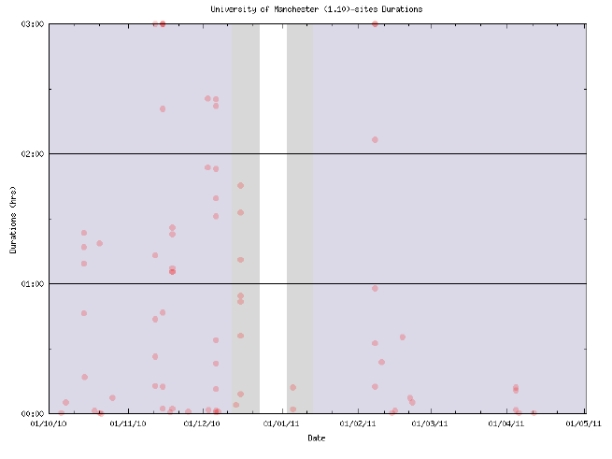
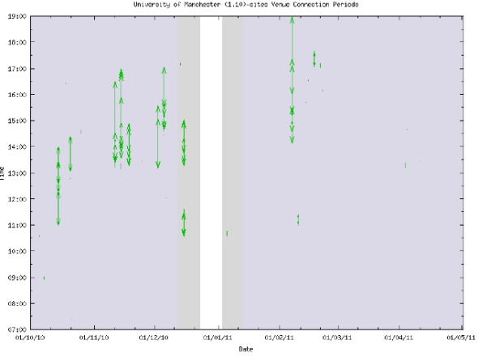
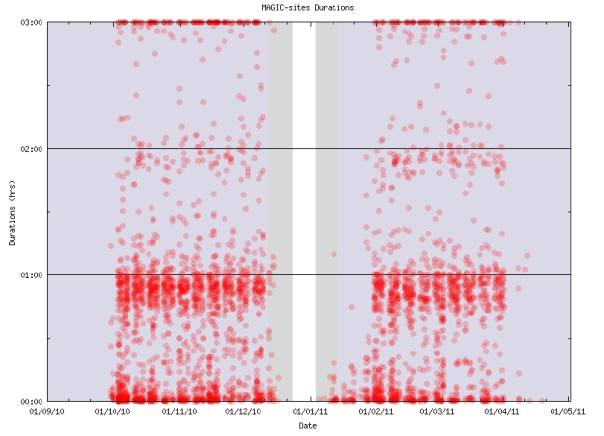
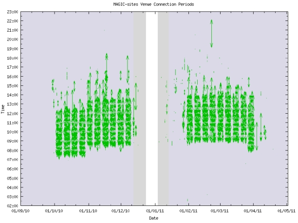

Case Study 1: A Tale of Two Rooms
Presented here is story of two different groups of researchers each providing postgraduate training
courses; one for Computer Science and the other for Mathematics. The computer science
graphics group AIG (Advanced Interface Group) in the University of Manchester ran a monthly local
group under the banner of the ACM SIGGRAPH Manchester Professional Chapter
http://manchester.siggraph.org/. Using the Access Grid Support Centre (http://www.agsc.ja.net)
they provided a recording and annotation system that was sponsored by the JISC funded scientific
visualization network vizNET (http://www.viznet.ac.uk). The Mathematicians run a consortium of 19
universities across the UK that share postgraduate lectures throughout the first two semesters of
each year funded by the EPSRC project MAGIC (http://maths.dept.shef.ac.uk/magic/index.php
).
Room 1: School of Computer Science: Room1.10, Kilburn Building, e-Science NorthWest which
has 82 active users booking the site, and has seating for up to 30 (20 comfortably). It was QA
tested last on 12/04/2011
Room 2: School of Mathematics: Room 1.213, Alan Turing Building, Mathematics. It is only
bookable by prior arrangement and has three active booking users for this reason. It can seat 20
comfortably, but is a part of 18 other similar rooms. It was QA tested last on 17/01/2011
School of Computer Science AGtivity:
A summary list of events for the period of 2005-2011: Over the last six years they have hosted 72
different events with over 981 local attendees, and via the Access Grid video conferencing links
there have been 61 unique external sites join. As a research experiment 15 of the lectures have
been recorded and some annotated with slide changes and text comments.
Although this is a very strong group supporting numerous PhD students in terms of statistics this
does not show up on the analysis for two reasons; one it is too fine grain being monthly activity
and secondly occurred over seven years pre-dating the high resolution recording period when data
could be captured.
The following shows the statistics for Rm1:10 and indicates regular afternoon use.


School of Mathematics AGtivity:
A summary list of events for the last 12 months: Over the last academic year MAGIC nodes were
responsible for 4255 sessions, which in reality involved about 450 hour lectures. The room is
occasionally outside of the lecture timetable which can be seen from the statistics. Also there is a
high level of testing between the 19 universities, shown with lots of short events, as well as other
sites which keep their video conferencing nodes on throughout the day.


Three observations that can be made to help room planning:
- It is clear to see how physical rooms and their virtual venues are used outside of known core time tabled events.
- It is also clear to see gaps when core timetable events do not occur.
- Use of this room is extremely efficient with consecutive back-to-back events.
Both groups are active and approach postgraduate activities in different ways. One anecdotal
statement to make is Computer Science mainly have meetings in the afternoon, whereas
Mathematics lectures are in the morning - so we could merge the activities within one physical
room. Both forms of use are important and could co-exist - which is not a usual planned idea in
room allocation.